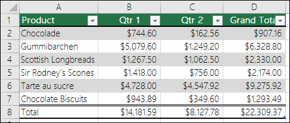

Access Excel Tables with Python#
Access Excel Tables with Python#
This post is about extracting data from Excel tables into Python. Source data is with permission from ExcelisFun
Excel Tables are a great way of grouping related data, as it makes analysis easier. Usually, these tables will have names to identify them, as well as some other cool features. An example image is shown below:

Source : support.office.com

Data Source : ExcelisFun
In the image above, there are a couple of Excel tables, with defined names - SalesRep, Products, Category, and Supplier tables. How do we read this into Python?
Option 1 - The Naive way:#
Let’s read it into pandas
import pandas as pd
filename = "Data_files/016-MSPTDA-Excel.xlsx"
df = pd.read_excel(filename, sheet_name = "Tables", engine='openpyxl')
#view the first five rows:
df.head()
| SalesRepID | SalesRep | Region | Unnamed: 3 | ProductID | Products | RetailPrice | CategoryID | SupplierID | Unnamed: 9 | CategoryID.1 | Category | Unnamed: 12 | SupplierID.1 | Supplier | City | State | ||
|---|---|---|---|---|---|---|---|---|---|---|---|---|---|---|---|---|---|---|
| 0 | 1 | Sioux Radcoolinator | NW | NaN | 1.0 | Quad | 43.95 | 3.0 | GB | NaN | 1.0 | Beginner | NaN | GB | Gel Boomerangs | Oakland | CA | gel@gel-boomerang.com |
| 1 | 2 | Tyrone Smithe | NE | NaN | 2.0 | Yanaki | 27.95 | 1.0 | CO | NaN | 2.0 | Advanced | NaN | CO | Colorado Boomerangs | Gunnison | CO | Pollock@coloradoboomerang.com |
| 2 | 3 | Chantel Zoya | SW | NaN | 3.0 | Eagle | 19.95 | 2.0 | CC | NaN | 3.0 | Freestyle | NaN | CC | Channel Craft | Richland | WA | Dino@CC.com |
| 3 | 4 | Chin Pham | SE | NaN | 4.0 | Bellen | 26.95 | 1.0 | GB | NaN | 4.0 | Competition | NaN | DB | Darnell Booms | Burlington | VT | Darnell@Darnell.com |
| 4 | 5 | Diego Vasque | MW | NaN | 5.0 | Aspen | 24.95 | 1.0 | CO | NaN | 5.0 | Long Distance | NaN | NaN | NaN | NaN | NaN | NaN |
Notice how Pandas did not identify the tables - it just pulled in everything, even the empty columns. Also note the mangling of column names(SupplierID.1, CategoryID.1). This is not good enough. Yes, we could fix it, probably use the empty rows as a means of splitting the dataframe into new dataframes, but that is not wise. How do we truly know where one table starts and the other ends? Surely there has to be a better way. Thankfully there is.
Option 2 - The better way :#
Check on stackoverflow and you’ll see solutions and conversations regarding this. The better way is via Openpyxl, a python module dedicated to working with Excel files. It has a method - .tables that allows access to defined tables in the spreadsheet.
# import library
from openpyxl import load_workbook
# read file
wb = load_workbook(filename)
# access specific sheet
ws = wb["Tables"]
We can access the tables in the worksheet through the tables method - this returns a dictionary :
{key : value for key, value in ws.tables.items()}
{'dSalesReps': 'A1:C26',
'dProduct': 'E1:I17',
'dCategory': 'K1:L6',
'dSupplier': 'N1:R5'}
From the result above, we can see the name of each table (name=dSalesReps) and the span of the data (ref=’A1:C26). Let’s get our data out :
mapping = {}
for entry, data_boundary in ws.tables.items():
#parse the data within the ref boundary
data = ws[data_boundary]
#extract the data
#the inner list comprehension gets the values for each cell in the table
content = [[cell.value for cell in ent]
for ent in data
]
header = content[0]
#the contents ... excluding the header
rest = content[1:]
#create dataframe with the column names
#and pair table name with dataframe
df = pd.DataFrame(rest, columns = header)
mapping[entry] = df
mapping
{'dSalesReps': SalesRepID SalesRep Region
0 1 Sioux Radcoolinator NW
1 2 Tyrone Smithe NE
2 3 Chantel Zoya SW
3 4 Chin Pham SE
4 5 Diego Vasque MW
5 6 Vannessa Deloach W
6 7 Shon Stein NW
7 8 Tomi Benton NE
8 9 Ghislaine Stidham SW
9 10 Yoshiko Murillo SE
10 11 Hoyt Potts MW
11 12 Alysha Dewitt W
12 13 Claudine Dupuis NW
13 14 Shanta Spring NE
14 15 Ramonita Babcock SW
15 16 Janyce Betancourt SE
16 17 Rhiannon Cathey MW
17 18 Dominica Ordonez W
18 19 Rana Burchfield NW
19 20 Neida Ashe NE
20 21 Marylouise Halverson MW
21 22 Naoma Bloom NW
22 23 JoJo Jones W
23 24 Dean Washington W
24 25 Kiki Lim W,
'dProduct': ProductID Products RetailPrice CategoryID SupplierID
0 1 Quad 43.95 3 GB
1 2 Yanaki 27.95 1 CO
2 3 Eagle 19.95 2 CC
3 4 Bellen 26.95 1 GB
4 5 Aspen 24.95 1 CO
5 6 Carlota 23.95 3 GB
6 7 Sunshine 19.95 4 GB
7 8 Sunset 22.95 4 GB
8 9 Beaut 35.95 5 CO
9 10 Kangaroo 25.00 2 CC
10 11 Elevate 48.95 5 GB
11 12 Flattop 25.95 2 CO
12 13 Vrang 12.95 4 DB
13 14 TriFly 21.95 3 DB
14 15 NaturalElbow 35.00 4 DB
15 16 LongRang 41.00 5 CC,
'dCategory': CategoryID Category
0 1 Beginner
1 2 Advanced
2 3 Freestyle
3 4 Competition
4 5 Long Distance,
'dSupplier': SupplierID Supplier City State \
0 GB Gel Boomerangs Oakland CA
1 CO Colorado Boomerangs Gunnison CO
2 CC Channel Craft Richland WA
3 DB Darnell Booms Burlington VT
E-mail
0 gel@gel-boomerang.com
1 Pollock@coloradoboomerang.com
2 Dino@CC.com
3 Darnell@Darnell.com }
We can safely extract our tables from the dictionary :
dSalesReps, dProduct, dCategory, dSupplier = mapping.values()
Let’s view some of the dataframes
dSalesReps.head()
| SalesRepID | SalesRep | Region | |
|---|---|---|---|
| 0 | 1 | Sioux Radcoolinator | NW |
| 1 | 2 | Tyrone Smithe | NE |
| 2 | 3 | Chantel Zoya | SW |
| 3 | 4 | Chin Pham | SE |
| 4 | 5 | Diego Vasque | MW |
dSupplier
| SupplierID | Supplier | City | State | ||
|---|---|---|---|---|---|
| 0 | GB | Gel Boomerangs | Oakland | CA | gel@gel-boomerang.com |
| 1 | CO | Colorado Boomerangs | Gunnison | CO | Pollock@coloradoboomerang.com |
| 2 | CC | Channel Craft | Richland | WA | Dino@CC.com |
| 3 | DB | Darnell Booms | Burlington | VT | Darnell@Darnell.com |
There we have it, our excel tables successfully extracted and assigned to variables. We can proceed from here and run our computations in Pandas.
Option 3 - An even simpler form :#
The steps above can be simplified by using the xlsx_table function from pyjanitor. Simply install pyjanitor with pip, and read in the Excel table:
# pip install pyjanitor
from janitor import xlsx_table
# read in the specific table:
xlsx_table(filename, table='dCategory')
| CategoryID | Category | |
|---|---|---|
| 0 | 1 | Beginner |
| 1 | 2 | Advanced |
| 2 | 3 | Freestyle |
| 3 | 4 | Competition |
| 4 | 5 | Long Distance |
All the tables can be read at once; it will be loaded as a dictionary, and the relevant table accessed:
tables = xlsx_table(filename)
# view all the keys, which are the table names:
tables.keys()
dict_keys(['dSalesReps', 'dProduct', 'dCategory', 'dSupplier'])
Access a specific table, using Python’s dictionary syntax:
tables['dSalesReps']
| SalesRepID | SalesRep | Region | |
|---|---|---|---|
| 0 | 1 | Sioux Radcoolinator | NW |
| 1 | 2 | Tyrone Smithe | NE |
| 2 | 3 | Chantel Zoya | SW |
| 3 | 4 | Chin Pham | SE |
| 4 | 5 | Diego Vasque | MW |
| 5 | 6 | Vannessa Deloach | W |
| 6 | 7 | Shon Stein | NW |
| 7 | 8 | Tomi Benton | NE |
| 8 | 9 | Ghislaine Stidham | SW |
| 9 | 10 | Yoshiko Murillo | SE |
| 10 | 11 | Hoyt Potts | MW |
| 11 | 12 | Alysha Dewitt | W |
| 12 | 13 | Claudine Dupuis | NW |
| 13 | 14 | Shanta Spring | NE |
| 14 | 15 | Ramonita Babcock | SW |
| 15 | 16 | Janyce Betancourt | SE |
| 16 | 17 | Rhiannon Cathey | MW |
| 17 | 18 | Dominica Ordonez | W |
| 18 | 19 | Rana Burchfield | NW |
| 19 | 20 | Neida Ashe | NE |
| 20 | 21 | Marylouise Halverson | MW |
| 21 | 22 | Naoma Bloom | NW |
| 22 | 23 | JoJo Jones | W |
| 23 | 24 | Dean Washington | W |
| 24 | 25 | Kiki Lim | W |
you can even read it into a polars DataFrame:
xlsx_table(filename, table='dCategory', engine='polars')
| CategoryID | Category |
|---|---|
| i64 | str |
| 1 | "Beginner" |
| 2 | "Advanced" |
| 3 | "Freestyle" |
| 4 | "Competition" |
| 5 | "Long Distance" |